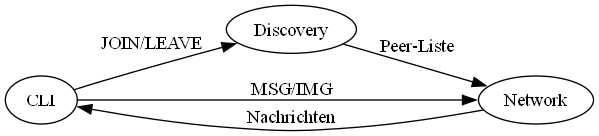

Loading...
Searching...
No Matches
Chat-Programm - Technische Dokumentation
Einführung
SimpleChat ist ein Peer-to-Peer-Chat-Programm zur lokalen Kommunikation in IP-Netzwerken. Es basiert auf dem Simple Local Chat Protocol (SLCP) und ermöglicht die Übertragung von:
- Textnachrichten
- Bildern
- Systemnachrichten

Systemarchitektur
Hauptfunktionen
- Automatische Peer-Entdeckung via UDP-Broadcast
- Zuverlässiger Bildtransfer mit Handshake-Mechanismus
- CLI-Oberfläche für einfache Bedienung
- Modulare Architektur (siehe Systemarchitektur)
Systemarchitektur
Unterkomponenten
| Modul | Beschreibung |
|---|---|
| user_interface.py | CLI für Nutzerinteraktion |
| discovery_service.py | Verwaltet Peer-Liste via UDP |
| network_communication.py | TCP-basierte Nachrichtenübertragung |
Datenfluss

Schnellstart
- Konfiguration anpassen: [user]name = "Ihr_Name"udp_port = 4000tcp_port = 5000
- Programm starten: python main.py config.toml
- Verfügbare Befehle: join - Netzwerk beitretenmsg - Nachricht sendenimg - Bild sendenwho - Peers anzeigen
Weiterführend
- Quellcode-Übersicht
- SLCP-Protokoll Details
- Fehlerbehebung